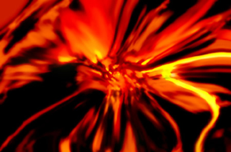

|  |
.......................... BINARY DRUG
BINARY DRUG ist Mindmachine-Musik. Durch die Mindmachine werden mehrere verschiedene Möglichkeiten der bewußtseinstechnischen = schamanistischen Tradition genutzt. Der Sound etwa baut auf FFR auf, jenem Phänomen, das sich am EEG durch eine Einstimmung der elektromagnetischen Schwingungsfrequenz des Hirns auf die Frequenz von Rhythmus, etwa auf Trommeln, oder eben die gepulsten Töne der Mindmachine äussert. Durch die Frequenzdifferenz des Stereotones entsteht im Hörzentrum des Rezipienten ein neuer Ton, mit eben dieser Differenz als Frequenz, also auch Töne, welche sonst nicht wahrgenommen werden können, wie z.B. niederfrequente Chakra-Töne und nicht zuletzt die musikalischen Eigenschaften des Synthesizers.
|